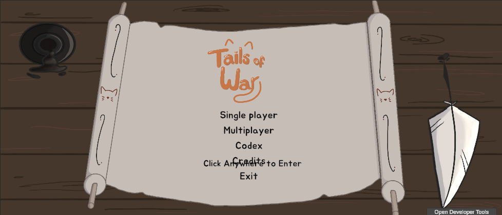
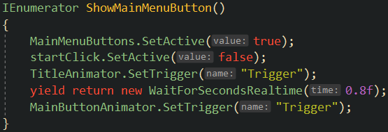
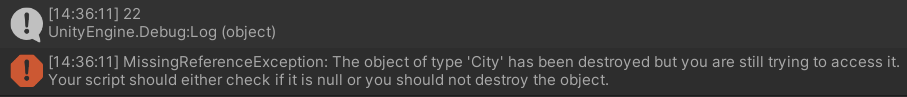
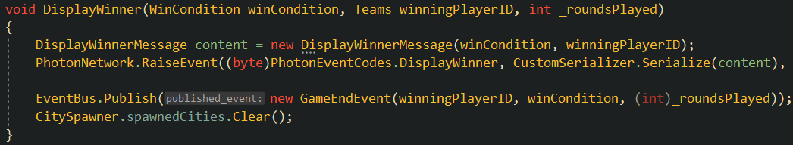

DevBlog #5: AI Player & Main Menu Bugs (12/3/2023)

Summary:
This devblog consisted of only one week of work in which I fixed some gamebreaking issues related to the main menu freezing and the AI player stalling indefinitely.
Main Menu Freeze Bug:
A bug was reported where the main menu would freeze after the user had entered the room creation screen and then clicked the back arrow button and returned to the main menu. I began looking into this last week and noticed that a script attached to the main menu canvas GameObject initially had all of its variables assigned correctly. However, after entering the room creation screen and returning to the main menu, all of the variables were unassigned and null. So, I assumed the issue was here, but when I began looking into this issue again this week, I was not able to re-create the bug. However, I did notice that when you returned back to the main menu screen now, the UI was a bit off.
 All of the game options would be listed (single player, multiplayer, options, codex, exit game), but the start screen text was also enabled which overlapped the other UI elements. I don't have too much experience working with UI in the Unity Editor, so I tried looking there for a bit for a method to disable the start screen text when the main menu buttons were active. Eventually, I ended up modifying the main menu script so that anytime the main menu buttons are enabled, the start screen text is disabled.
AI Stalling After Consecutive Games:
When the user completed either a single player or multiplayer game (which worked successfully) and began a new, single player game, the AI player would immediately stall indefinitely and break on their first turn. This was a pretty gamebreaking issue as it meant that you couldn't play consecutive games without restarting the entire application in between. I was pretty lost on where exactly to begin with this, but I noticed that as soon as the AI stalled, an error was output to the console. It was complaining about a reference to a city being null as it had previously been destroyed.
I thought this was odd because all of the cities, and capitals, were still present in the game view as well as the hierarchy. They also still functioned correctly on my end as I was able to spawn units normally and hover over cities like usual. So, the first thing I tried was simply locating the line of code in the AIGameState script that called the city code where the issue occurred and just checking if the city was null beforehand. I tested it and it worked, but I felt that it was sort of a hacky fix as it didn't make sense why this would only be happening on games after the first.
So, I decided to print out the city count (which was stored in a list) when the AI called the buggy function. During the first playthrough, it printed out eleven each time the function was called - nine cities and two capitals, so this made sense. On the second playthrough, however, it printed out twenty-two, which was double the actual amount. This was interesting and definitely not a coincidence that the AI thought the there were exactly two times the actual amount of cities. I figured that the cities must have been getting destroyed and therefore null, but the AI did not know this and still tried to reference the cities from the previous game.
Finally, I decided to clear the spawned cities list when the game ended and noticed an OnGameEnd event in the script I was currently working in, so I added it there. However, that event was never actually called, so I found another event related to the end of a game which was also never called. I think our codebase may have used them at some point and then something changed, but they were never removed. Anyways, I did eventually find the correct event that was called at the end of a game and I cleared the spawned cities list when it was called. This finally fixed the issue and the AI worked as intended.
Summary:
Overall, this sprint was productive in that I fixed some pretty glaring bugs. Due to Thanksgiving Break, we only worked for one week for this devblog instead of the usual two, but I'm still pretty happy with how it went.
Two Week Time Breakdown:
- Studio Meetings: 2 Hours
- Main Menu Freeze Bug: 3 Hours
- AI Stalling on Consecutive Games: 3 Hours
- Studio Communication: 1 Hour
- Total: 9 Hours